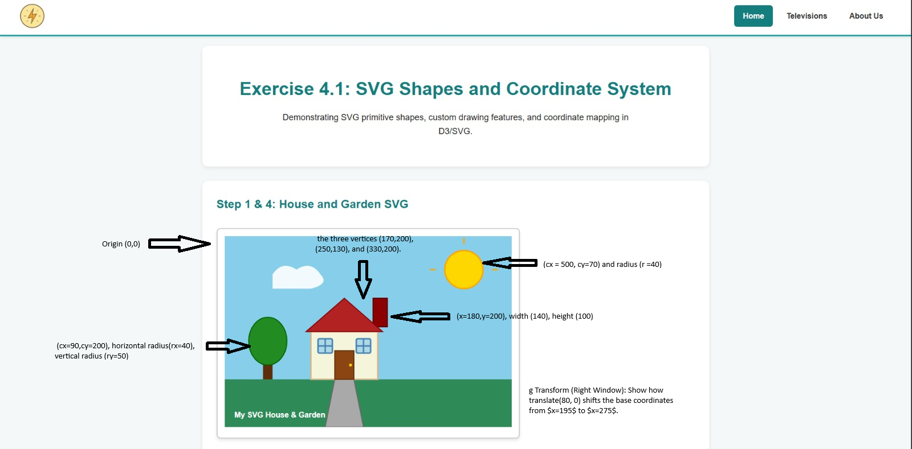

Exercise 4.1: SVG Shapes and Coordinate System
Demonstrating SVG primitive shapes, custom drawing features, and coordinate mapping in D3/SVG.
Step 1 & 4: House and Garden SVG
Step 2: Coordinate System Mapping
Below is the annotated image demonstrating how coordinates in the code correspond to the SVG output:
